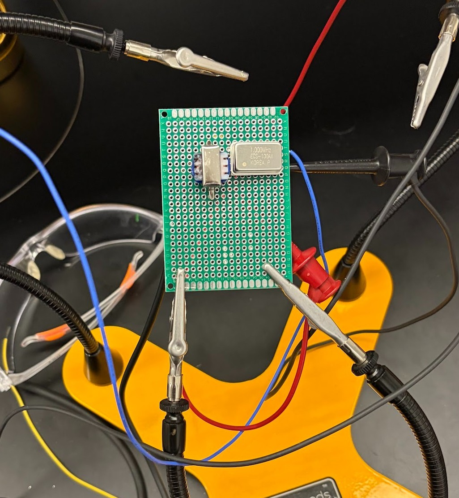

PID-controlled system using IR sensors and an ATmega328P to stabilize a ball at the center of a platform.

Built an AM radio transmitter on a perforated PCB using a crystal oscillator and audio transformer.